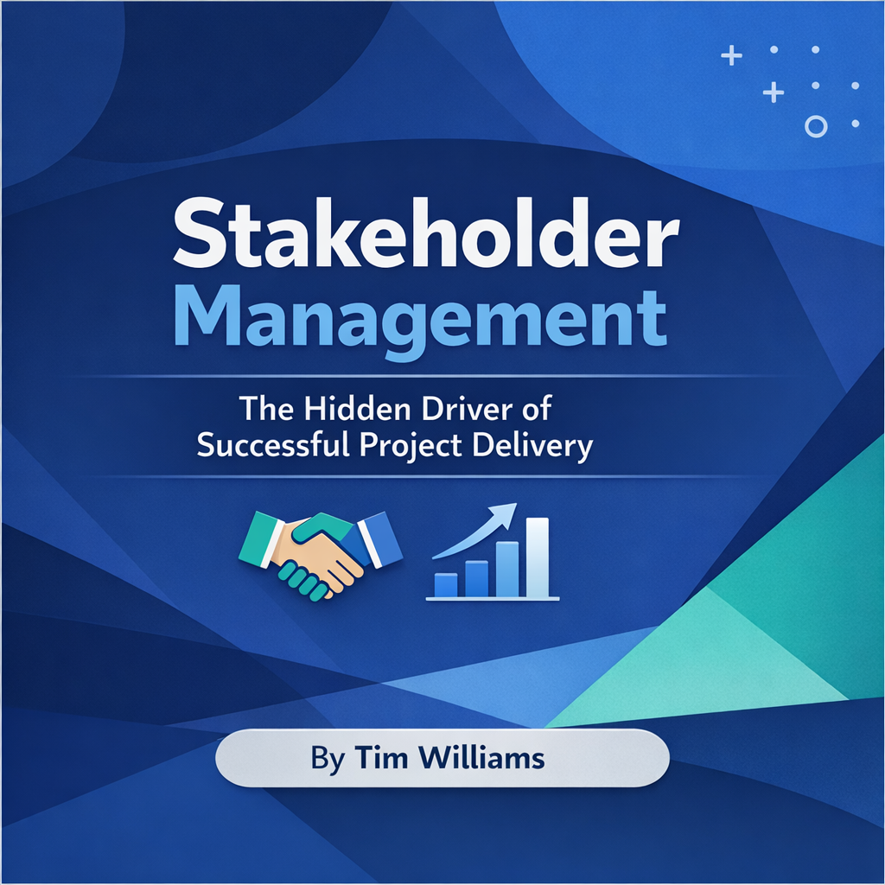

Practical, experience-led thinking on programme delivery, cyber security, cloud transformation and modern workplace change.
Featured Insight
AI Isn’t Replacing Project Managers — It’s Redefining What Great Looks Like
AI is becoming a strategic partner for modern PMs — accelerating clarity, improving prediction, strengthening stakeholder engagement and freeing leaders to focus on strategy, coaching and delivery excellence.
Over the past year, I’ve seen a clear shift: AI isn’t just another tool in the PM toolkit. It’s becoming a strategic partner that elevates how we plan, deliver, and lead.
The real advantage isn’t automation. It’s augmentation.
🔍 1. Clarity at Speed
AI can analyse complex project data in seconds — risks, dependencies, resource constraints — giving PMs the ability to make sharper decisions with greater confidence.
📊 2. Predictive Insight, Not Reactive Firefighting
Instead of waiting for issues to surface, AI highlights patterns early. It’s like having a second pair of eyes constantly scanning the horizon.
🤝 3. Stronger Stakeholder Engagement
From summarising meetings to generating tailored updates, AI helps PMs communicate with precision and consistency — freeing up time to focus on relationships, not admin.
🧩 4. More Time for Leadership
When AI handles the repetitive tasks, PMs can lean into the work that truly moves organisations forward: strategy, coaching, alignment, and delivery excellence.
AI won’t replace project managers. But project managers who embrace AI will absolutely outperform those who don’t.

Stakeholder Transformation Playbook: How Leaders Build Trust & Alignment
Transformations fail not because of technology, but because of misalignment, silence, and assumptions.
This playbook reframes stakeholder management as the hidden driver of predictable delivery, trust, and
momentum — built through clarity, transparency, active listening, and shared accountability.
Stakeholders rarely see programmes the way delivery teams do. Their world is shaped by scrutiny,
pressure, and risk — not day‑to‑day delivery mechanics. When communication lacks clarity, they fill
the gaps with assumptions. Trust is built not through volume, but through the quality of communication.
The playbook explores the trust equation, the communication gap, the alignment model, transparency,
active listening, psychological safety, and shared accountability — showing how leaders create
predictable delivery by building confidence, clarity, and shared ownership.
From Underperforming PMO to Strategic Partner: Delivering a Measurable Turnaround
A struggling PMO facing SLA failures, low morale, and declining client trust was transformed into a high‑performing, profitable, and strategically aligned service during a critical contract renewal phase.
When a managed service enters a contract renewal phase, performance becomes a commercial differentiator—not just an operational concern.
⚠️ The Challenge
The PMO was experiencing systemic issues including SLA failures, -10% revenue contribution, low morale, poor delivery outcomes, and a breakdown in client collaboration.
🎯 My Mandate
My role was to take operational control, stabilise delivery, rebuild culture, restore trust, and return the service to profitability.
🧩 1. Structured Recovery Through a Hybrid Delivery Model
A hybrid Agile + Integrated Planning approach prioritised immediate recovery while aligning short‑term fixes with long‑term strategy.
📘 2. Governance Reset for Predictable Delivery
Using Six Sigma, continuous improvement, lessons learned, and ISO 27001 alignment, governance was redesigned to enable—not restrict—delivery.
🤝 3. Cultural Transformation
Structured interviews and open communication rebuilt a “one team” ethos, restoring collaboration and trust.
📈 The Results
• Majority of projects moved from Red → Green
• Remaining projects moved from Red → Amber with plans
• 30% improvement in delivery performance
• CSAT increased from 3 → 7
• Revenue improved from -10% → +15%
• 100% SLA achievement
• Client agreed to act as a reference customer
Latest Perspectives
Why Cyber Uplift Fails — And How to Fix It
Most cyber uplift programmes fail not because of technology, but because of governance, ownership and cultural resistance.
The Real Cost of Poor Service Transition
Service transition is often treated as an afterthought, leading to disruption and spiralling support costs.
Delivering Cloud Adoption Without Disruption
Cloud transformation succeeds when it’s treated as a business change programme, not a technical migration.
Modern Workplace: What CIOs Get Wrong
Technology alone doesn’t modernise a workplace. Adoption, communication and leadership alignment do.
Programme Leadership Roles
SC‑Cleared Programme Manager
Secure, high‑stakes programme leadership across government, defence and regulated environments.